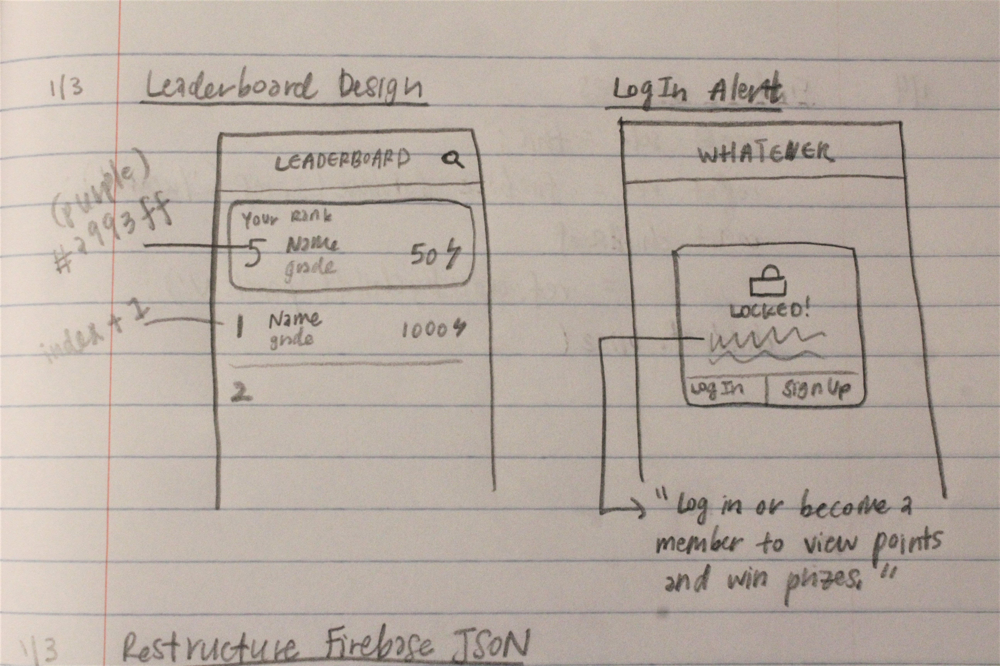
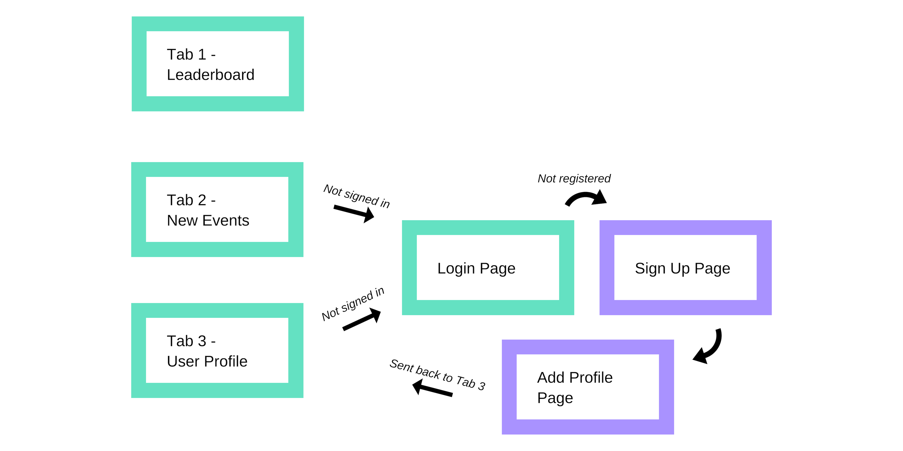
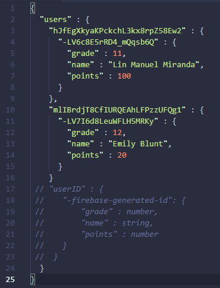
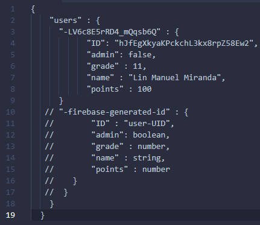
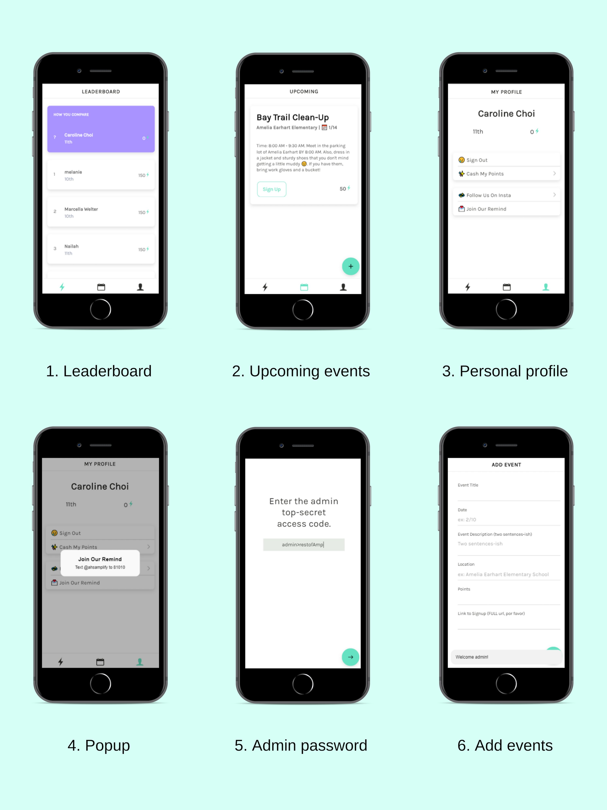

"The art of communication is the language of leadership."
In 2017 I started an environment conservation club called ‘Amplify’. The imminent challenges? One, getting club members to attend events. Two, allowing students to access club information faster and easier.
The vision was to build a clean and simple app that contained solutions to these issues. Ultimately, we desired an increase in club engagement and a decrease in apathy.
Project Type
PWA, the future, etc.
Languages
HTML, SCSS, Typescript
Framework & Backend
Built on Ionic (v.4) using Google Firebase Realtime Database and Angular
Timeline
12/30/2018 - 1/6/2019
Identifying the Specifics
1. Get club members to attend events by rewarding points.
2. Allow students to access upcoming events and sign up on the spot.
3. Create a friendly competition for points.
The Design Process
Before coding anything, I always sketch out a design and repeat my Mantra of Minimalism: “Keep It Simple Stupid”.

Once I identified my user’s basic requirements, I drew the different pages out, helping me conceptualise an idea of how the final product was going to shape and giving a set of guidelines for my front-end code.

For colour scheme, I went with aquamarine and purple. The bright colours appealed to me as teen-friendly and exciting.
User Flow
The user flow was important. Teenagers are easily annoyed by complicated buttons and tabs. So I opted for a max of 6 screens (8 screens for admin).

The Code
The hardest part of the coding to this project was filtering Google’s Firebase Database by values. Essentially, yours truly wanted a leaderboard so that club members could compete with each other over points earned from attending events. A leaderboard would incentivize participating in club activities and get the kids excited.
My initial Firebase JSON looked like this inarticulate piece:

See the problem? To get to the ‘points’ child, I needed the user UID of each user’s node. And when I got down to that node level, the query firebase.orderByChild(‘points’) would only return one value—that of the user. Essentially, the orderByChild() query was meaningless in this scenario, because while the code would return the users’ points, it wouldn’t be in a chronological order.
After a day of mulling things over, I came up with a simple but effective solution:

Here, the user UID is stored under a node that also includes the points. This way, only one query would be necessary, and would query by numerical order. Problem solved and new lesson learned!
End Result
Isabella, my club’s Vice President, came up with our super punny name, Applify, and we introduced the app to our club in January of 2019.
I ended up hosting the app on Firebase for two reasons: One, I was too broke to purchase an Apple developer membership, and two, it’s quicker to type in a link than go through the trouble to download.
iOS App Screens

(As you can see, some of my initial designs didn't make the cut to the final product.)
The upcoming event page is being put to great use. Students are signing up through it and we’ve had a 50% increase in club participation. Plus, they’re getting really into the whole competition thing.
Overall? I'd say success.